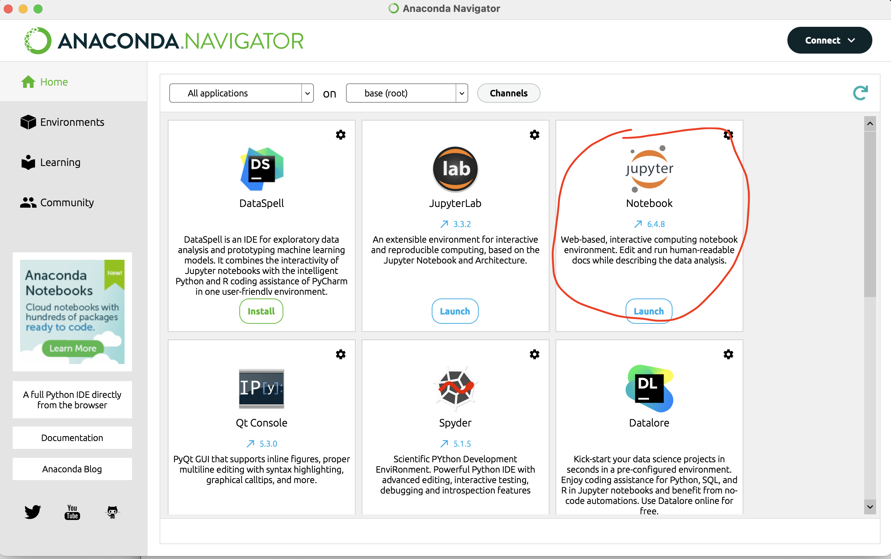

This blog will introduce the basic use skills and data processing skills of the Jupyter Notebook. If you are a newbie of the Jupyter Notebook, this blog will be very helpful to you
Install Anaconda and Run Jupyter Notebook
For downloading the Anaconda Navigator and Python, you could use the following link:
Anaconda Download on official website
After installing the Anaconda Navigator and Python, you could directly install Jupyter Notebook and launch it.

Pandas Introduction
Pandas is an extension library of Python language for data analysis.
Pandas is an open source, BSD licensed library that provides high-performance, easy-to-use data structures and data analysis tools.
The name Pandas derives from the terms “panel data” and “Python data analysis”.
Pandas is a powerful tool set for analyzing structured data, based on Numpy (providing high-performance matrix operations).
Pandas can import data from various file formats, such as CSV, JSON, SQL, and Microsoft Excel.
Pandas can perform operations on various data, such as merging, reshaping, selection, data cleaning and data processing features.
Pandas is widely used in academic, financial, statistical and other data analysis fields.
Pandas Data Structure
Series is an object similar to a one-dimensional array. It consists of a set of data (various Numpy data types) and a set of related data labels (indexes).
DataFrame is a tabular data structure, which contains a set of ordered columns. Each column can be of different value types (numeric value, string, Boolean value). DataFrame has both row index and column index, which can be seen as a dictionary composed of Series (using a common index).
Pandas Installation
Installing Pandas requires Python as the basic environment. Before starting, we assume that you have installed Python and Pip
-
Installing with Anaconda: follow the steps of Install Anaconda and Run Jupyter Notebook
-
Using pip:
1 | pip install pandas |
Import Datasets
Pandas’s main business is data analysis. Therefore, reading/writing data from external files is an important function of Pandas. Pandas provides a variety of API functions to support the reading and writing of various types of data (such as CSV, Excel, SQL, etc.). The common functions are shown in the following table
| File type | Read Function | Write Function |
|---|---|---|
| xls/xlsx. | read_excel. | to_excel. |
| CSV. | read_csv. | to_csv. |
| SQL. | read_sql | to_sql. |
| JSON. | read_json. | to_json. |
| HTML. | read_html. | to_html. |
| HDF5. | read_hdf | to_hdf. |
| pickle. | read_pickle. | to_pickle. |
Pandas can convert the read tabular data into DataFrame data, and then perform data analysis, data preprocessing, and row and column operations by operating the DataFrame.
Let’s take CSV files as an example to discuss how Pandas handles files. Other types of files operate similarly.
The csv files are the most commonly used file types when we use Jupyter Notebook
Import pandas and use pd as alias instead of pandas. Then, check the version
1 | import pandas as pd |
1 | Out[1]: '1.4.2' |
Assuming that the data source is Participant_03.csv, we will first use Pandas’ read_csv() method reads data
1 | data = pd.read_csv("Participant-03.csv", sep=",") |
1 | Out[2]: |
Data Observation
- View basic information of data
1 | data.info() |
1 | Out[3]: |
- View the first ten lines
1 | data.head(10) |
1 | Out[4]: |
- View the last 4 lines
1 | data.tail(4) |
1 | Out[5]: |
- View basic statistics of data
1 | data.describe() |
1 | Out[6]: |
- View all types of Dataframe data
1 | data.dtypes() |
1 | Out[7]: |
- View all samples in the “Finish” column
1 | data['Finish'] |
1 | Out[8]: |